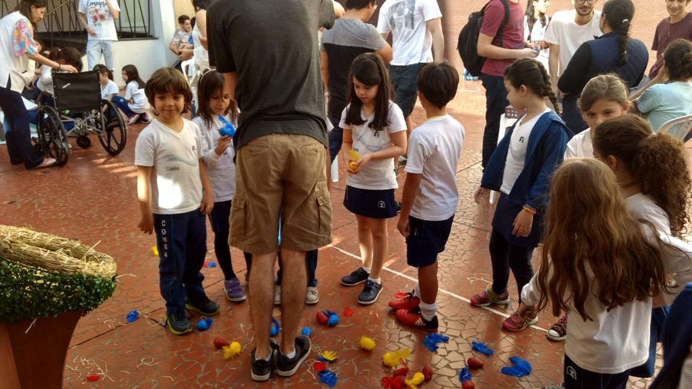

De Volta ao Ninho - 1° Semestre (2017.1)
Natureza do Design - Professor Roberto F.
Proposta:
Os alunos receberam a proposta da construção de um brinquedo infantil biomimetizado, ou seja, inspirado em algum animal. Esse exercício é abstrato dessa forma proprositalmente, a fim de que se utilizem os processos de Design discutidos em sala. Além disso, o FabLab do Insper seria fundamental para a realização do projeto, agregando também prática com equipamentos básicos de marcenaria, costura, fresadoras e impressoras 3D.
Resumo:
O primeiro passo foi o levantamento de ideias por parte do grupo: o que fazer? Em qual animal nos inspirar e, em qual característica? O BrainStorming foi praticado ao longo de todo o projeto, pois o modelo não era definitivo enquanto não houvesse um modelo físico terminado. Iniciou-se o projeto com a escolha dos pássaros e sua habilidade de voo. A ideia base consistia num jogo em que os pássaros voariam. Após mais discussões, elaborou-se um jogo no qual as crianças deveriam devolver os pássaros a um ninho, o qual estaria no topo de uma árvore. Esse jogo assemelharia-se muito a um jogo de basquete, caso uma analogia entre passáro-bola e ninho-cesta fosse realizada. A questão chave do projeto era definir como seria realizado o voo do pássaro: ele seria lançado? com qual dispositivo? Ele seria arremessado? Quais as regras do lançamento?
Ler mais